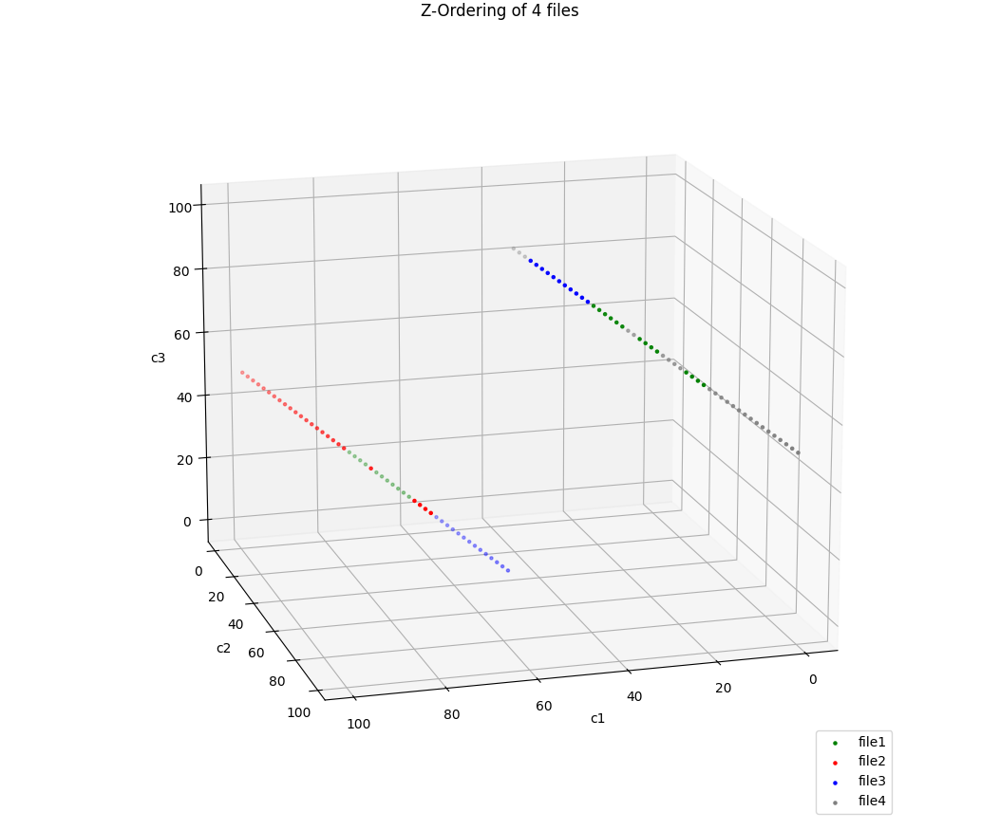

Z-Ordering
Z-ordering is an optimization technique in big data that allows faster access since similar data lives together. We discuss the algorithm that defines what is similar here.
Imagine a logical grid where all the values of one column run across the top and all the values from another run down the side. If we were to sort this data, every datum can be placed somewhere in that grid.
Now, if the squares of the grid were mapped to files and all the data in each cell were to live in those files, we have made searching much easier as we now know the subset of files in which it may live. We’ve essentially sorted in not just one dimension but two (although we can do higher).
This can be especially useful when we want to sort the data but don’t know exactly what to sort on - a common connundrum when dealing with events. Say we have event_time, insert_time and update_time. Which do we choose? We could sort the data three times, each time on one column but this is impractical with huge data sets. Enter z-order.
Note that the Z-Order really needs 2 or more columns on which to act. Only one column is the degenerate case. “Zorder/Hilbert etc on a single dimension are just a hierarchal sort” - Russell Spitzer on Slack.
(This is a good article about z-ordering from the perspective of Apache Iceberg.)
For an example in Delta Lake, we can see this code that creates a data set with columns c1, c2 and c3 whose values are [x, 99-x, x+50 mod 100] for x [0, 99]. After z-ordering it, these numbers are split into 4 different files. Generating a graphic illustrates how the data points are distributed over those files:

The idea behind how we calculate which cell a datum falls into is best described here on Wikipedia. But, in brief, the binary representation of the data points is interleaved to give a z-value per tuple. In our example, I see a [0, 99, 50] mapped to the byte array [0, 0, 0, 0, 0, 0, 0, 0, 0, 9, -112, 26]. I took a look at the Delta Lake code here where a Spark Column object is created that wraps a DL InterleaveBits type which in turn is a subclass of Spark’s Catalyst Expression type. This executes on Spark’s InternalRow, that is, the raw data on the executors.
The reason the code is doing this is to add a column with which we can repartition the data with the SQL CAST(interleavebits(rangepartitionid(c1), rangepartitionid(c2), rangepartitionid(c3)) AS STRING). The rangepartitionid keyword is part of the Delta Lake machinery.
Using this z-order value (plus a random key), the DataFrame the Delta code now calls repartitionByRange which samples the data SO and breaks it into discrete ranges.
Given the interleaving of the columns c1, c2 and c3 their order has minimal impact on the z-value so it’s no surprise to see nearby data clustering into the same files, as we can see in the graphic. In fact, if you look at the DataFrame during the repartition process:
+---+---+---+-------------------------------------------+
| c1| c2| c3|c7b6b480-c678-4686-aa99-283988606159-rpKey1|
+---+---+---+-------------------------------------------+
| 0| 99| 50| \t�|
| 1| 98| 51| \t�|
| 2| 97| 52| \t�b|
| 3| 96| 53| \t�e|
| 4| 95| 54| \b��|
| 5| 94| 55| \b��|
| 6| 93| 56| \b��|
| 7| 92| 57| \b��|
| 8| 91| 58| \b�|
| 9| 90| 59| \b�|
| 10| 89| 60| \b�b|
| 11| 88| 61| \b�e|
| 12| 87| 62| \b��|
| 13| 86| 63| \b��|
| 14| 85| 64| \f)�|
| 15| 84| 65| \f)�|
| 16| 83| 66| \f'|
| 17| 82| 67| \f'|
| 18| 81| 68| \f'b|
| 19| 80| 69| \f'e|
+---+---+---+-------------------------------------------+
you can see the slowly changing values by which things are partitioned (column c7b6b480-c678-4686-aa99-283988606159-rpKey1 - a random name so it doesn’t clash with other column names. It’s dropped immediately after the call to repartitionByRange)